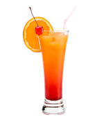

Recettes avec Alcool
Ici vous trouvez des recettes pour profiter de la soirée Attention au mal de crâne du lendemain
matin !
Enjoy your Drink.
Bloody Mary
4cl de Vodka,
8cl de jus de tomates
3 gouttes de tabasco
1 pincée de sel de celerie
Ce cocktails se prepare directrement au verre
dans le verre ajouter tour a tour tout les ingredient
terminer par tout melange
enjoy your Drink
4cl de Vodka
2cl de Jus de Citron
1cl de Curaçao Bleu
Verser dans un shaker à demi rempli de glaçons
le jus de citron, le curaçao puis la vodka.
verser dans un verre à cocktail
enjoy your Drink
Bronx
3cl de Gin
1,5cl de Noilly Prat
1,5cl de Vermouth Rouge
1cl de jus d'Orange
Verser dans un shaker à demi rempli de glaçons
tous les ingredients
Frapper et verser dans un verre à cocktail
enjoy your Drink
Cosmopolitan
4cl de Gin
2cl de jus de Canneberge
0,5cl de jus de Citron Vert
Verser dans un shaker à demi rempli de glaçons
le jus de citron vert,le jus de canneberge puis le gin.
Frapper et verser dans un verre à cocktail
enjoy your Drink
Cuba Libre
4cl de Rhum Cubain
8cl de cola
1/2 Citron Vert
Ce cocktails se prepare directrement au verre
dans le verre ajouter tour a tour tout les ingredient
terminer par tout melange
enjoy your Drink
Daïquiri
5cl de rhum blanc cubain
2cl de jus de citron vert
0.5cl de sirop de sucre de canne
Verser dans un shaker à demi rempli de glaçons
le jus de citron vert, le sirop de sucre de -
canne, puis le rhum.
verser dans un verre à cocktail
enjoy your Drink
le French 75
12cl de Champagne Brut
3cl de Gin
1,5cl Jus de Citron
1cl de Sirop de Succre de Canne
Directement dans la flûte
Ajouter tour à tour tous les ingredients
enjoy your Drink
Dark & Storming
4cl de Rhum Ambré
2cl de Jus de Citron Vert
4cl de Bierre au Gingembre
Ce cocktails se prepare directrement au verre
dans le verre ajouter tour a tour tout les ingredient
terminer par tout melange
enjoy your Drink
Harvey Walbanger
4cl de Vodka
6cl de Jus d'Orange
1 trait de Galliano
Ce cocktails se prepare directrement au verre
dans le verre ajouter la vodka et le jus d'orange
melangé et ajouter le trait
de liqueur Galliano
enjoy your Drink
le Bellini
9cl de Champagne Brut
ou Prosecco
3cl de purée de Pèches Blanche
Directement dans la flûte
ajouter le purée de peche puis le champagne
ou le prosecco
enjoy your Drink
Long Island Iced Tea
1cl de rhum blanc
1cl de vodka
1cl de gin
1cl de Cointreau
3cl de jus de citron
4cl de cola
Verser dans un shaker à demi rempli de glaçons
le jus de citron, puis tout les alcools.
verser dans un thumbler
completer de cola
enjoy your Drink
Maragarita
4cl de Tequila
2cl de Cointreau
1cl de Jus de Citron vert
Humidifier avec du citron vert
et givre avec du sel fin le bord du verre
sur ca moitier seulement
Verser dans un shaker à demi rempli de glaçons
tous les ingredients
Frapper et verser dans un verre à cocktail
enjoy your Drink
Mojito
4cl de Rhum Cubain
3cl de jus de Citron Vert
1cuill de Sucre de Canne
6 feuille de Menthe
ce cocktails se prepare directrement au verre
dans le verre ajouter tour a tour tout les ingredient
terminer par tout melange
enjoy your Drink
Negroni
3cl de Campari
3cl de Vermouth rosso
1cl de gin
Ce cocktails se prepare directrement au verre
dans le verre ajouter tour a tour tout les ingredient
terminer par tout melange
enjoy your Drink
Old Fashioned
5cl de Bourbon
4 Gouttes d'Angostura
1 Morceau de Sucre
1 Cerise au Marasquin
1 Zeste d'Orange
Ce cocktails se prepare directrement au verre
dans le verre ajouter tour a tour tout les ingredient
terminer par tout melange
enjoy your Drink
Pina Colada
4cl de Rhum blanc
2cl de Rhum Ambré
4cl Lait de coco
12cl jus d'Ananas
Verser dans un shaker à demi rempli de glaçons
le lait de coco, le jus d'ananas puis le rhum blanc.
Frapper et verser dans un verre thumbler terminer
par verser le rhum ambré sur le dessus du
verre
enjoy your Drink
Screwdriver
4cl de Vodka
8cl de Jus d'Orange
Ce cocktails se prepare directrement au verre
Ajouter tour à tour tout les ingredients
terminer par tout melangé
enjoy your Drink
Sex on the Beach
4cl de Vodka
2cl de Liqueur de Melocoton
6cl de Jus de Canneberge
6cl de Jus d'Orange
Verser dans un shaker à demi rempli de glaçons
le jus d'orange, le jus de canneberge,
la liqueur de meloconton puis la vodka
Frapper et verser dans un verre thumbler
enjoy your Drink
Tek Paf
6cl de Tequila
1 Pincée de Sel
1 quartier de Citron Vert
Ce Shot se prepare directrement dans le verre
dans le Shot verser la tequila
Boire se shot
metre le sel sur la langue
puis croquer le
citron vert
enjoy your Shot
Tequila Sunrise

4cl de Tequila
8cl de Jus d'Orange
1cl de sirop de Grenadine
ce cocktails se prepare directrement au verre
dans le verre ajouter la tequila et le jus d'orange
terminer par le trait
de sirop de grenadine
enjoy your Drink
Vesper
6cl de Gin
1,5cl de Vodka
0,75cl de Lillet
Verser dans un shaker à demi rempli de glaçons
tous les ingredients
Frapper et verser dans un verre à cocktail
decoreé avec un zeste de citron
enjoy your Drink
Vodka Martini
6cl de Vodka
1cl de Noilly Prat
Verser dans un shaker à demi rempli de glaçons
la vodka et le noilly prat.
Frapper et verser dans un verre à cocktail
decoreé avec une brochette d'olive
enjoy your Drink
White Lady
4cl de Gin
1cl de jus de Citron
2cl de Cointreau
Verser dans un shaker à demi rempli de glaçons
le jus de citron,le cointreau puis le gin.
Frapper et verser dans un verre à cocktail
enjoy your Drink